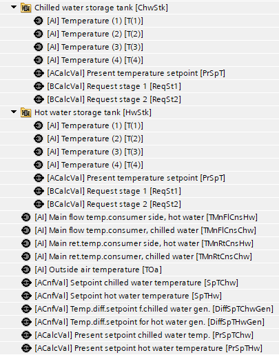
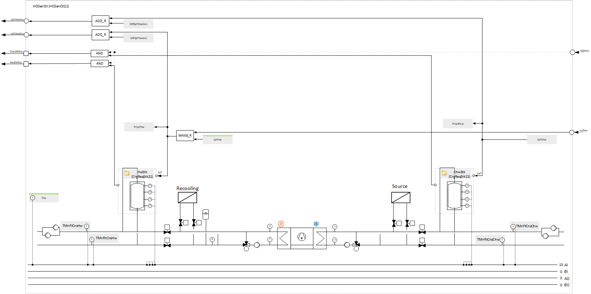
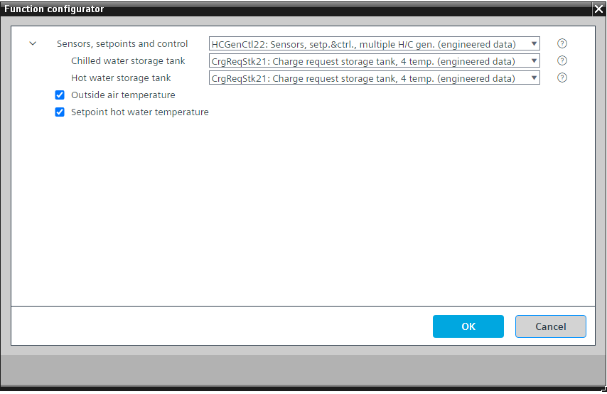

[HCGenCtl21] 单个加热和冷却发电机的传感器、设定点和控制
Program block, name / node subtype:[HCGenCtl21] 单个加热和冷却发电机的传感器、设定点和控制
Library hierarchy: Universal equipment
Family: HCGenCtl
项目树 | 图表 |
|---|---|
 |  |
Configurator


程序块存储在没有 I/Os. 的库中 使用auto-create and auto-connect函数创建 I/Os 和 /or 将它们连接到接口块，例如 R_A、CMD_B。或者，从包含库中预定义 I/Os 的文件夹中取出 I/Os，并从工厂中取出 /or，并将它们连接到接口块。
对热水流温度和冷冻水流温度执行设定点协调。
控制热水储罐和冷冻水储罐（各有 4 个温度）的充电状态（CrgReqStk21）。
当该功能开启时（加热和制冷发电装置处于“开启”状态）并且其中一个储罐需要充电，能量发生器就会开启并接收相应的设定值。
热水温度控制的设定点增加由模拟配置值定义的小偏移，并且稍高的热水温度设定点被发送到能量发生器。
冷冻水温度控制的设定值会减少一个由模拟配置值定义的小偏移量。稍低的冷冻水温度设定值被发送至能量发生器。
与热水温度控制逻辑不同的是，热水温度设定点的设定点请求的收集很可能发生（在跟随请求时可能会改变），冷冻水温度控制逻辑有固定的设定点。通常，制冷机和冷冻水系统设计用于规定的温度水平，不应受到消费者的影响。
该程序块具有以下可选功能：
Option: Return temperature (1xAI)
创建外部气温的模拟输入并读取其信号。
Option: Setpoint hot water temperature
当没有从整个供应链的消费者收集热水功能的请求或仅收集二进制请求时可以使用的配置值。
姓名 | 描述 | 类型 | 报警/通知类 | 趋势/类型 | |
|---|---|---|---|---|---|
TMnFlCnsHw | 主水流温度消费者侧，热水 | AI：模拟输入 | No | 是的，2 | |
TMnRtCnsHw | 主回水温度消费者侧、热水 | AI：模拟输入 | No | 是的，2 | |
PrSpTHw | 当前设定热水温度 | ACalcVal: Analog calculated value | No | No | |
DiffSpTHwGen | 热水发生器温差设定值 | ACnfVal: Analog configuration value | N/A | No | |
HwStk | Hot water storage tank | [CrgReqStk21] Charge request storage tank, 4 temperature sensors | N/A | N/A | |
TMnFlCnsChw | 主流温度消费者侧，冷冻水 | AI：模拟输入 | No | 是的，2 | |
TMnRtCnsChw | 主回水温度用户侧、冷冻水 | AI：模拟输入 | No | 是的，2 | |
SpTChw | Setpoint chilled water temperature | ACnfVal: Analog configuration value | N/A | No | |
PrSpTChw | 当前设定冷冻水温度 | ACalcVal: Analog calculated value | No | No | |
DiffSpTChwGen | 冷冻水发生器温差设定值 | ACnfVal: Analog configuration value | N/A | No | |
ChwStk | Chilled water storage tank | [CrgReqStk21] Charge request storage tank, 4 temperature sensors | N/A | N/A | |
姓名 | 描述 | 类型 | 报警/通知类 | 趋势/类型 | |
|---|---|---|---|---|---|
SpTHw | Setpoint hot water temperature | SpTHw: Setpoint hot water temperature | No | 是的，2 | |
TOa | Outside air temperature | AI：模拟输入 | No | 是的，3 | |